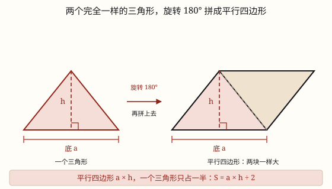

三角形的面积
两个完全一样的三角形能拼成一个平行四边形，所以三角形面积是等底等高平行四边形的一半：底 × 高 ÷ 2。
| 所属主题 | 图形的认识与测量 |
|---|---|
| 所属模块 | 图形与几何 |
| 课标学段 | 第三学段（5~6年级） |
| 前置知识 | 平行四边形的面积、三角形的认识与分类 |
| 核心素养 | 几何直观推理意识空间观念 |
教材定位
人民教育出版社《2024年版》
对应五上第 6 单元「多边形的面积」：三角形的面积。
课标要求
| 图形与几何·图形的认识与测量 | 知道面积单位千米²、公顷；探索并掌握平行四边形、三角形和梯形的面积计算公式；会估计不规则图形的面积（例33）。 印刷第 32 页 行为动词：掌握 |
|---|
说明
拿两张完全一样的三角形纸片，把其中一张旋转 180°，两张沿着一条相等的边拼在一起——正好拼成一个平行四边形，既没有重叠，也没有空隙。这就是三角形面积公式的来历。
拼成的平行四边形，底就是三角形的底 a，高就是三角形的高 h，它的面积是 a × h。而这个平行四边形是用两个完全一样的三角形拼成的，一个三角形只占它的一半。
所以三角形的面积 = 底 × 高 ÷ 2，写作 S = ah ÷ 2。这个「÷ 2」不是谁规定的，是「两个拼一个」算出来的：先算出两个三角形合起来的面积，再平均分成两份。
任意一个三角形都有三条底，每条底都对应一条高。用哪一组底和高算都行，结果一定相同——因为同一个三角形，面积只有一个。底和高必须互相垂直且互相对应，这是算对的前提。
锐角三角形、直角三角形、钝角三角形都适用这个公式。钝角三角形有两条高落在图形外面，量的时候要把底边延长，再从对面的顶点向延长线作垂线。
使用场景
做班旗、剪三角彩旗：一面三角形小旗要用多少布，算的就是三角形面积。
屋顶与桁架：三角形屋面铺瓦、做钢架，先按底乘高除以 2 算出面积，再算材料。
校园花坛：三角形花坛铺草皮、种花，按面积算用量。
交通警示牌：三角形标志牌贴反光膜，一张膜要用多少材料。
红领巾、三角尺：身边这些三角形物件，也常常要估一估它们的面积。
注意点
÷ 2 千万不能漏。底 6 厘米、高 4 厘米的三角形，面积是 6 × 4 ÷ 2 = 12 平方厘米；写成 24 就是把两个三角形当成一个了。
高不是斜边。三角形没有「斜边乘底」这种算法，高必须是从顶点到底边的垂直距离。
底和高要对应。给的是哪条底，就找那条底上的高；三条底对应三条高，配错了答案就错。
已知面积求底或高，要先乘 2。面积 12 平方厘米、底 6 厘米，高是 12 × 2 ÷ 6 = 4 厘米，不是 12 ÷ 6 = 2 厘米。
钝角三角形的高可能在图形外面。量高时要把底边延长，别硬在图形里面找。
单位要平方。底和高用厘米，面积就是平方厘米。
为什么是这样

图 1：两个完全一样的三角形能严丝合缝拼成一个平行四边形，所以一个三角形只占它的一半
算理推导
先复习上一课：平行四边形的面积 S = ah，它是把平行四边形剪拼成长方形得来的。现在遇到三角形，斜边更多，数方格更麻烦，还是用老办法——把它变成会算的图形。
剪两个完全一样的三角形。把其中一个旋转 180°（绕一条边的中点转半圈），沿着一条相等的边和另一个拼在一起，正好拼成一个平行四边形，看图 1 右边：两块颜色不同的三角形严丝合缝。
观察对应关系：平行四边形的底就是三角形的底 a，平行四边形的高就是三角形的高 h。所以这个平行四边形的面积是 a × h。
关键的一步：这个平行四边形由两个完全一样的三角形组成，一个三角形正好占一半。所以三角形面积 = ah ÷ 2。
换个说法也一样：要把三角形补成平行四边形，必须再复制一个一模一样的；补出来的面积是原来的 2 倍，那么原来的就是补成后的一半。÷ 2 是「两个拼一个」的必然结果，不是额外加的规定。
动手实验
剪三组完全一样的三角形：锐角、直角、钝角各两个。每组都试着拼一次，你会发现都能拼成平行四边形。量出底和高，先算平行四边形的面积，再除以 2，和用方格纸数出来的三角形面积对一对。再把同一个三角形换一条边当底、量出对应的另一条高，重新算一遍，答案应该完全一样。
按场景的例题
例 1（场景：校园生活） 给班级做三角形小旗
小旗是三角形，底边 1.5 米，这条底上的高是 0.9 米。做一面小旗要多少平方米彩布？
解：S = ah ÷ 2 = 1.5 × 0.9 ÷ 2。先算 15 × 9 = 135，两位小数得 1.35；再除以 2 得 0.675。
答：需要 0.675 平方米彩布。
例 2（场景：工程建造） 三角形屋顶铺瓦
一面三角形屋顶，底宽 6 米，高 2.5 米。铺瓦每平方米 45 元，这面屋顶要多少元？
解：面积 6 × 2.5 ÷ 2 = 15 ÷ 2 = 7.5 平方米；费用 7.5 × 45 = 337.5 元。
答：面积 7.5 平方米，要 337.5 元。
例 3（场景：绿化照明） 校园三角形花坛种花
花坛是三角形，底 4 米，高 3 米。每平方米种 9 株花，一共要种多少株？
解：面积 4 × 3 ÷ 2 = 6 平方米；株数 6 × 9 = 54 株。
答：一共要种 54 株。
例 4（场景：上学日常） 路口看到的三角形警示牌
一块三角形警示牌，底 0.8 米，高 0.7 米。给它正面贴反光膜，需要多少平方米的膜？
解：0.8 × 0.7 = 0.56，再除以 2 得 0.28。
答：需要 0.28 平方米反光膜。
常用推论
三角形的面积 S = ah ÷ 2；反过来，底 a = 2S ÷ h，高 h = 2S ÷ a。
等底等高的三角形面积一定相等，形状可以完全不同——因为它们的面积都是同一个平行四边形的一半。
三角形面积是等底等高平行四边形面积的一半；反过来，平行四边形面积是等底等高三角形面积的 2 倍。
高不变时，底扩大到原来的 n 倍，面积也扩大到 n 倍；底不变时，高扩大到 n 倍，面积同样扩大到 n 倍。
易错点
错底 6 厘米、高 4 厘米，算成 6 × 4 = 24 平方厘米。
为什么错漏了 ÷ 2。6 × 4 算的是「两个完全一样的三角形拼成的平行四边形」，不是这一个三角形。
正确6 × 4 ÷ 2 = 12 平方厘米。
错底 8 厘米、一条边 5 厘米，算成 8 × 5 ÷ 2 = 20 平方厘米。
为什么错5 厘米是另一条边，不是这条底上的高。高必须垂直于所选的底。
正确找出这条底上的高（如 3 厘米），8 × 3 ÷ 2 = 12 平方厘米。
错已知面积 12 平方厘米、底 6 厘米，求高时算成 12 ÷ 6 = 2 厘米。
为什么错忘了公式里的 ÷ 2。反求高时，要先把面积乘 2，还原成平行四边形的面积。
正确h = 2S ÷ a = 12 × 2 ÷ 6 = 4 厘米。
错钝角三角形在图形里面找不到高，就说「这个三角形没有高」。
为什么错钝角三角形有两条高落在图形外面，要从顶点向底边的延长线作垂线。
正确把底边延长，从对面的顶点向延长线作垂线，量出这段垂直距离就是高。
直观理解
一块三角形三明治，再拿一块一模一样的、转个身贴上去，正好装满一个平行四边形「整盒」。整盒的面积用底乘高好算，一块就是整盒的一半——所以算三角形，先算整盒，再两个人平分。
两个一样三角形，旋转一拼成平行；整块面积底乘高，一块要拿一半分。